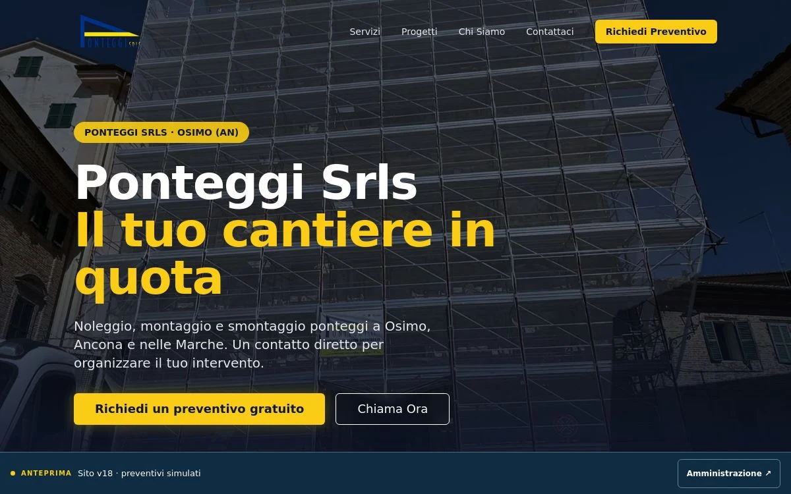
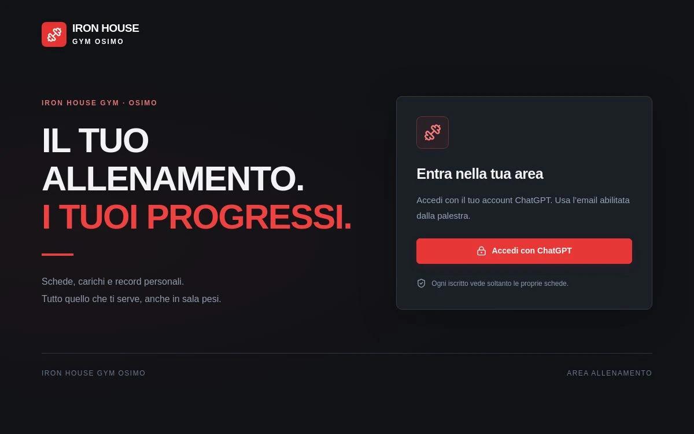
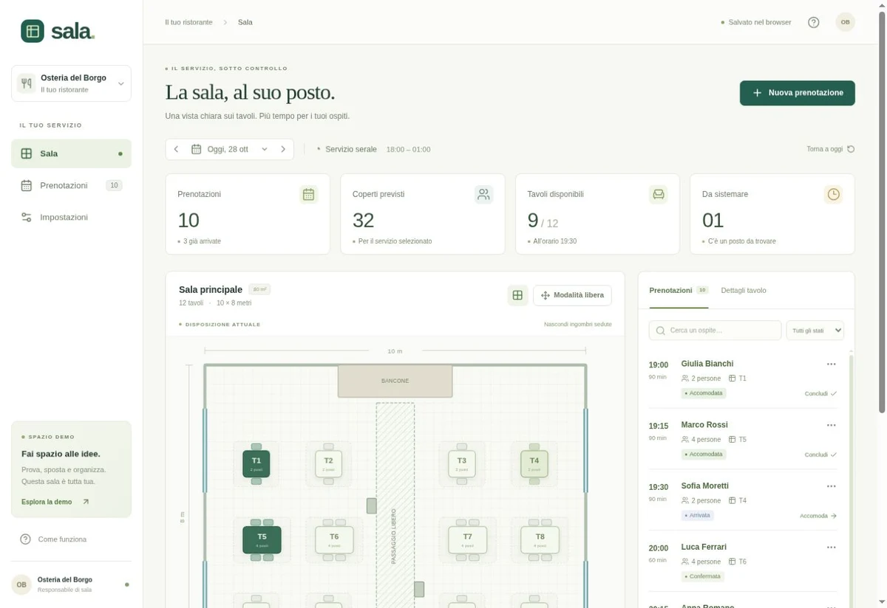
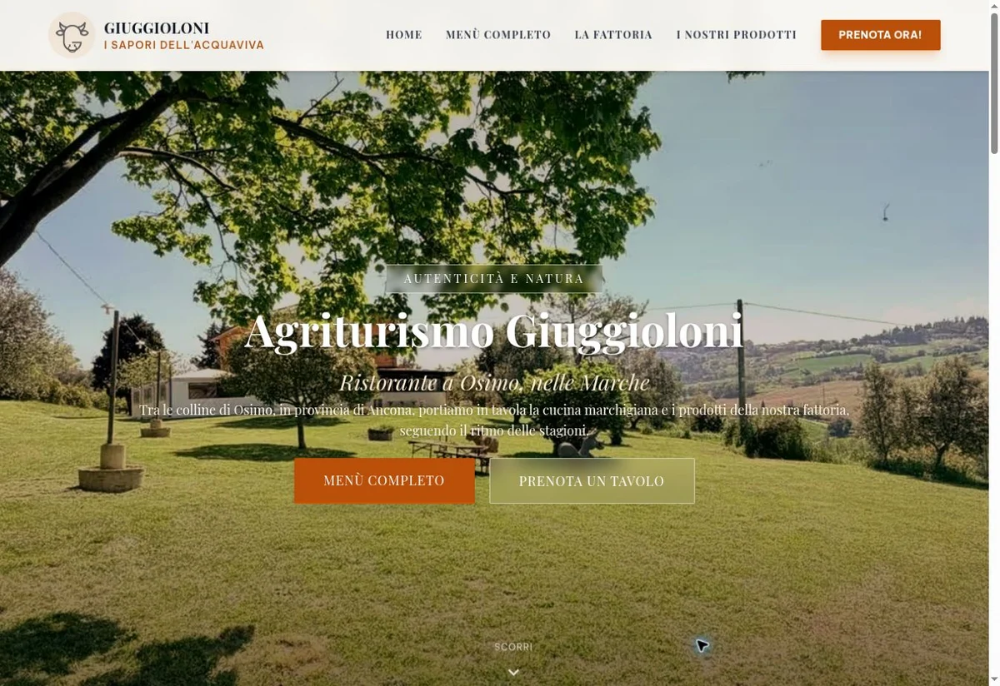

Iron House Gym
Un’esperienza web per una palestra, con una forte identità visiva e percorsi semplici per scoprire spazi, attività e contatti.
Siti web, applicazioni e interfacce sviluppati o prototipati con un obiettivo: rendere la tecnologia utile, riconoscibile e semplice da usare.
Ogni scheda presenta il progetto e la relativa demo navigabile. Le anteprime sono schermate reali dei siti e delle demo. Apri un’immagine per visitare il sito oppure consulta la scheda progetto.
Un’esperienza web per una palestra, con una forte identità visiva e percorsi semplici per scoprire spazi, attività e contatti.

Un concept narrativo per un’etichetta Rosso Conero, con uno storytelling visivo elegante e un’esperienza guidata dallo scroll.

Un progetto web per un’azienda del settore ponteggi, pensato per far trovare subito servizi, informazioni e modalità di contatto.

Studio di redesign e-commerce per una boutique di profumeria artistica, con una direzione visiva editoriale e attenzione al percorso d’acquisto.

Una web app che riunisce schede, esercizi e progressi, con interfacce dedicate agli iscritti e funzioni di amministrazione.

Una web app per organizzare tavoli e prenotazioni, con una planimetria interattiva e una vista del servizio che riunisce disponibilità, coperti e arrivi.

Interfaccia per consultare i menù da smartphone, con particolare attenzione a leggibilità, velocità e informazioni utili.

Un sito per raccontare l’agriturismo e la sua cucina marchigiana, con percorsi dedicati al menù, alla fattoria e ai prodotti dell’azienda agricola.
Non ci sono progetti in questa categoria.
Trasparenza, anche nel portfolio. I progetti mostrati comprendono demo, concept e sviluppi in corso. Non presentiamo questi lavori come incarichi commissionati o siti ufficialmente pubblicati, salvo conferma esplicita.
Partiamo da quello che vuoi migliorare: presenza online, lavoro quotidiano o servizi ai clienti. Definiamo insieme il passo successivo.
Raccontaci il tuo progetto